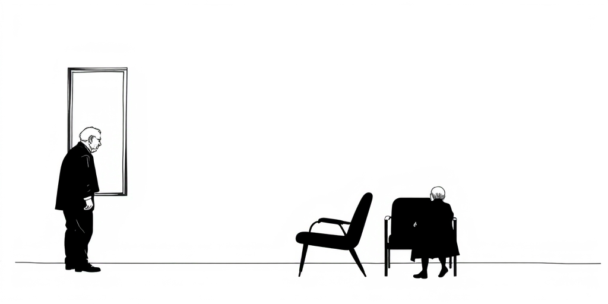
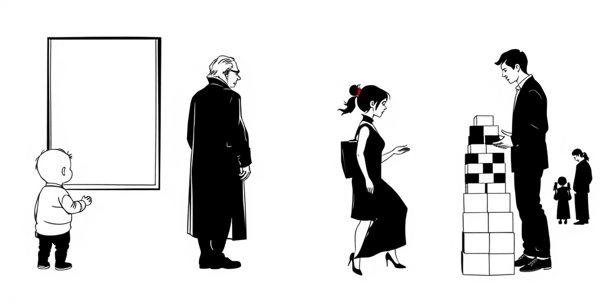
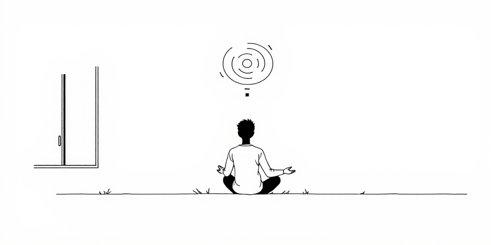

小汪老师的成长洞察 · 属于你的成长专栏
你以为气场是性格或魅力？错了。它是注意力长期聚焦在某个方向后，神经回路给你留下的印记。你散发出的压场感或透明感，不过是大脑为了生存，在特定环境里反复训练出的副产品。拆开它，你会看见自己的童年。

一个人走进会议室。他先不坐下，而是快速扫视全场，目光在每张脸上停留半秒。然后，他才走向某个空位。另一个人径直走向目标位置，坐下，打开电脑。这不是性格内向外向的区别。这是两套截然不同的注意力训练史，刻在了他们的神经系统里。
第一种人，他的大脑被训练成了高超的社交扫描仪。神经科学家斯蒂芬·波格斯提出的“多层迷走神经理论”能解释这一点：长期处于需要解读他人情绪、防备潜在冲突的环境，人的腹侧迷走神经复合体（负责社交参与）和交感神经系统（负责战或逃）会过度激活。他的“读人”能力很强，代价是注意力始终向外锚定，自我主张的能量便微弱了。他的气场是警惕的、收敛的。

气场的第一批训练师，是我们的原生家庭。在高冲突、情绪不可预测的家庭里长大的孩子，注意力必须高度敏感地锁定在父母的脸色、语气和屋内的空气上。这是一种生存策略。他们发展出了惊人的“读空气”能力，能捕捉最细微的变动。但这种注意力的代价，是自我感受的萎缩。他们的能量用于应对外部，而非建设内部。所以，他们可能共情力超强，但在需要主张自我、主导局面时，会感到一种根基性的无力。
相反，在一个安全但有规则、回应及时的家庭里，孩子的注意力被训练在另一条轨道上：如何完成手头的任务，如何解决眼前的问题，如何遵守边界并获得正向反馈。他们的注意力是内聚的、目标导向的。当他们走进房间，不会先扫描所有人的情绪，而是会直接思考“我来这里做什么”。这种注意力模式投射出的外在形象，是一种稳定的、不轻易被干扰的“目标感”。这就是另一种气场。海得拉巴那座“感受监狱”的博物馆（https://www.indiatoday.in/trending-news/story/hyderabads-new-feel-the-jail-museum-lets-visitors-see-what-prison-life-feels-like-2911045-2026-05-13），用空间模拟让人理解环境如何塑造人。其实，每个家庭，早就是一座无形的训练营。

好消息是，注意力模式并非终身烙印。神经科学的核心发现之一就是可塑性。你的“注意力肌肉”可以通过特定训练得到强化和转向。正念冥想训练你将注意力从纷乱思绪中收回，锚定在呼吸上，这能削弱杏仁核（大脑的警报中心）的过度反应。戏剧训练你聚焦于对手演员的眼神和台词，在虚构情境中练习情感的收放。武术则训练你在动态威胁中保持冷静的焦点判断。
这些训练的本质，都是在重塑你注意力的默认路径。当你不再习惯性地向外扫描他人的情绪，而是学会向内安顿，或向外聚焦于一个具体目标时，你的气场就开始改变了。它从防御性转向开放性，从飘忽转向笃定。演员杰米·李·柯蒂斯说过：“想要更多，并非忘恩负义。”（https://timesofindia.indiatimes.com/entertainment/english/hollywood/news/quote-of-the-day-by-jamie-lee-curtis-it-is-not-ungrateful-to-want-more-youre-alive-/articleshow/131425207.cms）这句话背后，是一种突破旧有注意力模式——比如“满足于现有”或“恐惧想要”——的勇气。气场的重塑，始于你决定将注意力的掌控权，从童年的训练师手里，拿回到此刻的自己手中。
值得思考的几个问题
所以，当你羡慕某人沉稳的气场时，不必神化他。你看到的，可能只是一个幸运地，在幼年时就被放入了正确“注意力培养皿”的人。而当你自感气场微弱、容易被人忽略时，也别轻易归咎于性格。不妨回溯一下，你的注意力，是被训练去“读空气”了，还是被训练去“解决问题”了？
改变是可能的，但起点不是模仿他的姿态或表情。起点是诚实地审视：我的注意力，此刻正被什么所消耗？又在为谁而训练？一个深刻的非洲谚语提醒我们：“当一位老人离世，一座图书馆便随之焚毁。”（https://economictimes.indiatimes.com/news/international/us/african-proverb-of-the-day-when-an-old-man-dies-a-library-is-life-lessons-on-culture-knowledge-human-nature-and-why-elders-experience-matters/articleshow/131019178.cms）你的注意力史，就是你个人那座图书馆里，最晦涩也最珍贵的一卷藏书。
参考资料
[1] Hyderabad's new 'Feel the Jail' museum lets visitors see what prison life feels like (India Today) https://www.indiatoday.in/trending-news/story/hyderabads-new-feel-the-jail-museum-lets-visitors-see-what-prison-life-feels-like-2911045-2026-05-13
[2] Quote of the day by Jamie Lee Curtis: ‘It is not ungrateful to want more….you're alive..' (Times of India) https://timesofindia.indiatimes.com/entertainment/english/hollywood/news/quote-of-the-day-by-jamie-lee-curtis-it-is-not-ungrateful-to-want-more-youre-alive-/articleshow/131425207.cms
[3] African proverb of the day: 'When an old man dies, a library is...' Life lessons on culture, knowledge, human nature and why elders' experience matters (The Economic Times) https://economictimes.indiatimes.com/news/international/us/african-proverb-of-the-day-when-an-old-man-dies-a-library-is-life-lessons-on-culture-knowledge-human-nature-and-why-elders-experience-matters/articleshow/131019178.cms
小汪老师的成长洞察 · 属于你的成长专栏